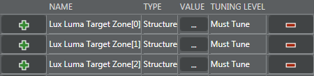

The AEC snapshot parameters control exposure table selection, EV bracketing exposure index values, and low light shot (LLS) tuning.
Adjust exposure index values to set the EV exposure during exposure bracketing. If the EV exposure values are not set, they default to strict settings.
With LLS, darker scenes can use lower gains and longer exposure times, and avoid triggering the flash by adjusting the exposure times and gains. LLS is disabled by default. Enable image stablization to avoid blurry images from extending the exposure time.
flashLuxTrigger has a pair of numbers LED Trigger Start Lux Index and LED Trigger End Lux Index. This adds hysteresis to LED triggering. If the flash is in AUTO mode, when the lux index exceeds the end lux index threshold, the LED fires and the lux index must dip below the start lux index threshold for the LED to stop firing. This prevents frequent decision switching seen with the 0x308 header when the scene lux index is around the original wLED Trigger Index value.
When enabled, the flash luma target used for preflash is determined. When disabled, flash snapshot uses the same luma target as a nonflash snapshot.
- Navigate to
- To enable the flash luma target, select the Value check box next to Enable Flash Target.
- Next to Flash Target, click
 and
set the start and end values for each lux index zone in the parameters.
and
set the start and end values for each lux index zone in the parameters.
 - If needed, set the start and end values for Flash Influence Target Interpolation. Lower the values to have the flash target prevail over the regular target for lower flash influences.
Set the exposure table ID
- In the Parameter Editor navigate to .
- Enter an ID value for the Exp Table ID Snapshot parameter.
- Using the Arbitration XSD file, verify that the table ID value is less than the number of exposure tables generated.
Tune EV bracketing
- If the EV image is too bright, decrease the Bracketing Adj For EV Pos 2 and Bracketing Adj For EV Neg 2 parameters to less than 1.
- If the EV image is too dark, increase the Bracketing Adj For EV Pos 2 and Bracketing Adj For EV Neg 2 parameters.
Tune LLS
- In the Parameter Editor, navigate to .
- To enable LLS, select the Value check box next to Enable LLS.
-
Next to LLS Lux Hysteresis click .
-
Next to LLS Exp Time LUT, click and adjust the exposure
time LUT by adding the preferred exposure for each corresponding exposure
index.
- Verify that the exposure time w.r.t. exposure index is in monotonic order for consistent behavior.